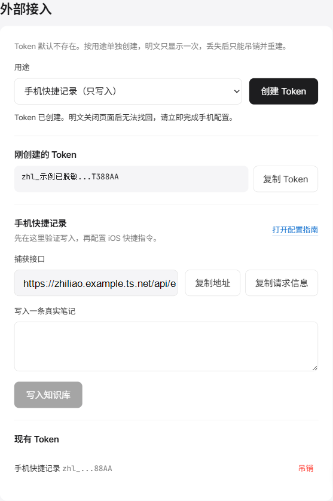
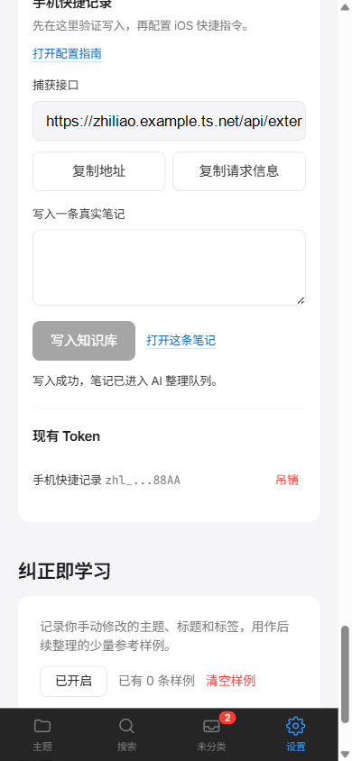

开始前
手机必须能通过 HTTPS 访问知了。推荐使用 Tailscale 提供的 *.ts.net 地址，并保持运行知了的电脑或服务器在线。
不要使用 localhost。手机里的 localhost 指手机本身，不是运行知了的电脑。
创建手机专用 Token
- 进入知了“设置”，找到“外部接入”。
- 用途选择“手机快捷记录（只写入）”。
- 点击“创建 Token”，立即复制明文。

截图中的 Token 已脱敏。自己的 Token 不要放进截图或共享模板。
先在知了中验证
在“写入一条真实笔记”中输入内容并点击“写入知识库”。成功后可以直接打开新笔记，失败时输入内容仍会保留。

“已保存”和“AI 已整理”是两个状态。未配置模型不会影响笔记保存。
创建 iOS 快捷指令
- 新建快捷指令“记到知了”，开启“在共享表单中显示”，接收文本和 URL。
- 有共享输入时使用共享内容，没有输入时使用“听写文本”。
- 使用“询问输入”让用户发送前确认或修改正文。
- 发送前把正文拷贝到剪贴板，网络失败时可直接粘贴重试。
- 添加“获取 URL 内容”，地址使用设置页的捕获接口，方法选择
POST。 - JSON 请求体增加
content，值使用确认后的正文。 - 请求头增加
Authorization: Bearer <Token>和Content-Type: application/json。 - 响应含
id时显示“已记到知了”，响应含error时显示错误内容。
设置页的“复制请求信息”会一次复制 URL、方法、请求头和请求体结构。
POST https://你的实例/api/external/capture
Authorization: Bearer zhl_xxx
Content-Type: application/json
{"content":"确认后的正文"}
放到常用入口
- 主屏幕：在快捷指令详情中选择“添加到主屏幕”。
- 控制中心：添加“快捷指令”控制并选择“记到知了”。
- 分享菜单：在任意应用分享文本或网页，选择“记到知了”。
遇到问题
| 现象 | 原因 | 下一步 |
|---|---|---|
| 401 | Token 无效、已吊销或权限错误 | 创建新的手机快捷记录 Token |
| 超时 | 服务未运行或网络不可达 | 确认主机在线并使用 Tailscale HTTPS 地址 |
| 证书错误 | HTTPS 证书不受信任 | 重新核对 *.ts.net 地址 |
| 一直待整理 | 笔记已保存，模型或队列不可用 | 在设置页检查 AI 服务与任务状态 |
当前边界
本首版完成应用内配置、自测、文档和自动测试。Apple 签名的快捷指令分享链接、真实 iPhone 蜂窝网络验证和连续 7 日真实使用仍需在 Apple 设备上完成。
完整技术指南位于仓库 docs/手机快捷记录.md。